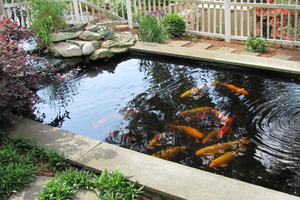
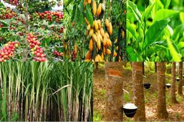
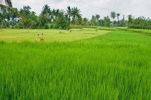
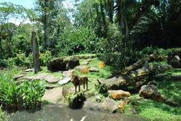

Mengenal Ekosistem Buatan
Ekosistem buatan yaitu suatu suatu ekosistem yang lingkungan nya diciptakan
oleh manusia serta memenuhi kriteria tertentu untuk disebut sebagai suatu
ekosistem, contohnya taman, perkotaan, dan kolam ikan.
Karakteristik Ekosistem Buatan
Beberapa karakteristik Ekosistem buatan yang menjadikannya berbeda dengan
ekosistem yang alami diantaranya;
-
Keberagaman spesies serta komposisi lingkungan yang cenderung lebih
sedikit, jika dibandingkan dengan ekosistem alami. Apabila ada spesies
yang kurang disuka cenderung untuk dihilangkan secara perlahan lahan
-
Ekosistem Buatan dibuat dengan tujuan tertentu, Oleh karena itu ekosistem
ini lebih rapuh serta rentan akan kegagalan akibat kurangnya keragaman
serta ketergantungannya pada campur tangan manusia
-
Ekosistem buatan yang didampingi adanya perbaikan yang berkelanjutan dapat
meningkatkan pendapatan penduduk suatu daerah tertentu, serta memungkinkan
untuk dipakai sebagai perluasan tempat tinggal manusia. dan yang terakhir
-
Ekosistem Buatan bergantung pada hukum alam, karena manusia hanya berperan
sebagai penemu bukan sebagai pencipta hukum alam. hanya beberapa aspek
proporsi serta kecepatan ekologi yang dapat dikontrol serta dimanfaatkan
oleh manusia untuk menciptakan peluang keuntungan bagi manusia. oleh sebab
itulah mengapa dapat kita jumpai ada suatu ekosistem buatan yang disebut
dengan semi-buatan
Didalam Ekosistem buatan juga bisa terjadi suatu aktivitas produksi dan
konsumsi, sehingga terjadilah suatu rantai makanan seperti halnya yang
terjadi pada ekosistem alami, namun pada ekosistem buatan, proses rantai
makanan yang terjadi cenderung terbatas, hal ini akibat terbatasnya komponen
serta keragamannya yang lebih sedikit.
Contoh Ekosistem Buatan
Terdapat banyak macam ekosistem buatan manusia, berikut adalah beberapa
contohnya:
- Ekosistem Kolam Ikan

Kolam ikan merupakan salah satu contoh ekosistem buatan, biasanya kolam
ikan ini memiliki tujuan produkstivitas perikanan atau hanya sebagai
hiasan saja. Adapun komponen biotik dan abiotik yang ada di dalam kolam
ikan pada umumnya adalah sebagai berikut:
-
Komponen biotik: lumut dan zooplankton (berperan
sebagai produsen atau pembuat nutrisi/makanan), ikan, keong, kecebong,
dan katak (bertindak sebagai konsumen), cacing (dapat berperan sebagai
pengurai)
-
Komponan abiotik: air yang berfungsi sebagai media
hidup biotik yang ada, tanah berfungsi sebagai dasar dari kolam
tersebut, cahaya matahari berfungsi sebagai sumber energi dan membantu
proses pembuatan makanan, udara berfungsi untuk pernapasan komponen
biotik
- Ekosistem Perkebunan

Perkebunan merupakan salah satu contoh ekosistem buatan di daratan.
Perkebunan diciptakan dengan tujuan meningkatkan hasil kebun sayur dan
buah-buahan untuk kepentingan manusia. Adapun komponen ekosistem
perkebaunan pada umumnya, yaitu sebagai berikut:
-
Komponen biotik: lumut, rumput, tanaman kebun seperti
berbagaimacam buah dan sayur (berperan sebagai produsen atau pembuat
nutrisi/makanan), jamur, lalat, nyamuk, semut, ulat, kupu-kupu,
belalang, burung (berperan sebagai konsumen), cacing dan mikroorganisme
lainnya dalam tanah (berperan sebagai detritivor).
-
Komponen abiotik: tanah, batu, air, cahaya, dan udara
- Ekosistem Sawah

Sawah merupakan salah satu contoh ekosistem buatan di daratan. Sawah
dibuat untuk menumbuhkan dan membudidayakan padi serta beberapa tanaman
lainnya. Terdapat berbagaimacam sistem penanaman padi, namun secara umum
komponen ekosistem sawah terdiri dari:
-
Komponen biotik: padi sebagai tanaman primer; rumput
dan gulma lainnya sebagai tanaman sekunder; burung, tikus, katak, dan
beberapa serangga sebagai hama terkadang ditemukan ular sawah sebagai
predator tikus dan katak; cacing dan mikroorganisme lainnya dalam tanah
(berperan sebagai detritivor)
-
Komponen abiotik: tanah, batu, air, cahaya, dan udara
- Ekosistem Kebun Binatang

Kebun binatang juga merupakan salah satu ekosistem buatan. Tempat ini
dibuat dengan tujuan sebagai sarana edukasi pengenalan hewan liar maupun
domestic, terkadang kebun binatang juga dijadikan sebagai tempat
penangkaran hewan yang dilindungi. Tentu saja terdapat banyak hewan di
tempat ini, meliputi hewan air, darat dan udara yang semuanya dipelihara
di dalam kandang yang baik. Komponen ekosistem kebun binatang terdiri
dari:
-
Komponen biotik: berbagaimacam hewan air, darat dan
udara; pohon, rumput, lumut, sebagai pelengkap habitat hewan-hewan
tersebut agar kandangnya menyerupai habitat aslinya
-
Komponen abiotik: tanah, batu, air, cahaya, dan udara